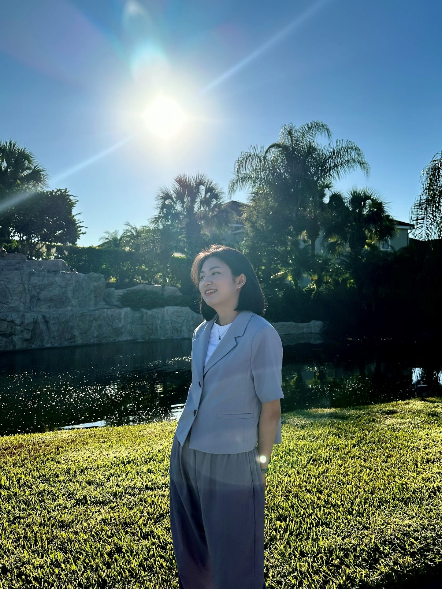

HELLO, I'M
Dahee Kim
Master's student in Applied Big Data with research interests in artificial intelligence, machine learning, natural language processing, and intelligent systems.
ABOUT
About Me
Hello! My name is Dahee Kim. I am currently pursuing a master's degree in Big Data Analytics at Kyung Hee University. My academic and research interests include artificial intelligence, machine learning, natural language processing, and intelligent data-driven systems.
I received my bachelor's degree in Computer Science from Hansung University, where I developed a strong interest in applying machine learning and deep learning techniques to real-world problems. Through coursework, research, and project experience, I became particularly interested in how AI models represent, interpret, and utilize complex information.
From 2023 to 2024, I studied abroad at Northeastern Illinois University in the United States. During my exchange program, I studied subjects including Modern Database Management, Artificial Intelligence, Server-Side Web Programming, and Event-Driven Programming. YouTube
My current goal is to deepen my understanding of modern AI systems and explore research problems involving language models, representation learning, reasoning, and multimodal information. I am especially interested in developing methods that go beyond simply applying larger models and instead improve how models understand and use information.
EDUCATION
Academic Background
M.S. in Big Data Analytics
Kyung Hee University
Graduate studies focused on artificial intelligence, data analytics, machine learning, and data-driven research.
B.S. in Computer Science
Hansung University
Studied computer science with a focus on big data, artificial intelligence, machine learning, and software development.
Exchange Student
Northeastern Illinois University
Completed coursework in Artificial Intelligence, Modern Database Management, Server-Side Web Programming, and Event-Driven Programming.